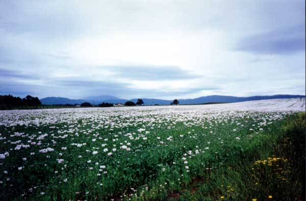

Morphine is the oldest drug and probably still the best. It is certainly the cheapest. An im dose will last about 4 hours in the dog and horse, and up to 24 hours in the cat, but the duration of action will depend on the pain. Morphine produces less obvious analgesia in ruminants, but works in pigs (short acting - about 1 hour after normal doses). It is not licensed for use in food animals. Intrathecal morphine lasts up to 24 hours, but sometimes produces itching of the areas supplied by the cord segments affected. Use sc or im rather than iv in dogs (histamine release).
Methadone is very similar to morphine but more expensive. It is traditionally used in horses because of a myth that it causes less excitement then morphine. It is very long acting in some people, but probably not in animals. It may cause less vomiting in dogs. It can be given iv, although this can cause bradycardia.
Pethidine (meperidine USAN) works well in people but is very short acting in most animals (up to 30mins in the dog, 20mins in the horse): high doses need to be given often. It is metabolised relatively easily by the cat. One metabolite, norpethidine, can cause excitation in people, usually only when it accumulates in renal disease or when pethidine is given regularly. This could be a problem in animals with renal disease. Pethidine is abused by people because it penetrates the CNS rapidly. Low dose pethidine can be useful to stop post-operative shivering.
Fentanyl and similar drugs are very potent, short acting drugs mainly used in anaesthesia to cover painful bits of ops or as infusions. Fentanyl lasts about 20mins after an iv dose, alfentanil lasts about 10mins. Fentanyl patches are sometimes used for longer term analgesia but take up to 24hrs to work. Carfentanil is similar but longer acting, it is usually used for chemical immobilisation of large animals (including deer). Make sure you have some naloxone handy if you are darting deer (for people, not the deer)! Remifentanil lasts about 3 - 4mins and can be useful for iv infusions to titrate the analgesia to surgical stimulation.
There are a number of other opioids peculiar to America, oxymorphone is widely used there as a substitute for morphine, and hydrocodone as a substitute for codeine.
Heroin (diamorphine) is not used in animals, and only very rarely in people in NZ. It is a drug of abuse. It is much more lipid soluble than morphine and gets into the CNS faster (so works better at producing euphoria), but once there it is thought to be metabolised to morphine and exert its analgesic effects as morphine.
analgesia
anaesthetic premedication
(anti-diarrhoeals)
(anti-tussives (stop coughing))
as with all analgesics, opioids are more effective if given before pain starts
severe head injury? - opioids raise intracranial pressure
upper respiratory tract injury? - block cough reflex thus may cause inhalation
of blood clots, teeth, etc.
unconsciousness - unable to feel pain???
Chest injury is sometimes cited as a contraindication for opioids on the theoretical
grounds that they inhibit respiration, however, rib injuries are extremely painful
and opioids often result in better respiration in animals with chest injuries.
Most µ agonists are controlled drugs because of the potential for abuse (in people). This means that they have to be locked away and their use recorded (see notes on the law); it also means that drug addicts will attempt to break into clinics to steal them.
The euphoric effects in a drug addict depend on a high concentration getting into the brain quickly. This means that lipid soluble drugs such as heroin, or to a lesser extent pethidine, are favoured over relatively water soluble drugs such as morphine. However, any drug addict desperate enough to break into a vet clinic is unlikely to be choosy.
Poppy seed head with sap oozing from cuts. When dried, this becomes opium.
Opium poppies growing in Tasmania. nb. it is illegal to grow them without a licence from the Ministry of Health!